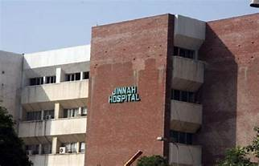
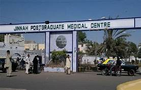
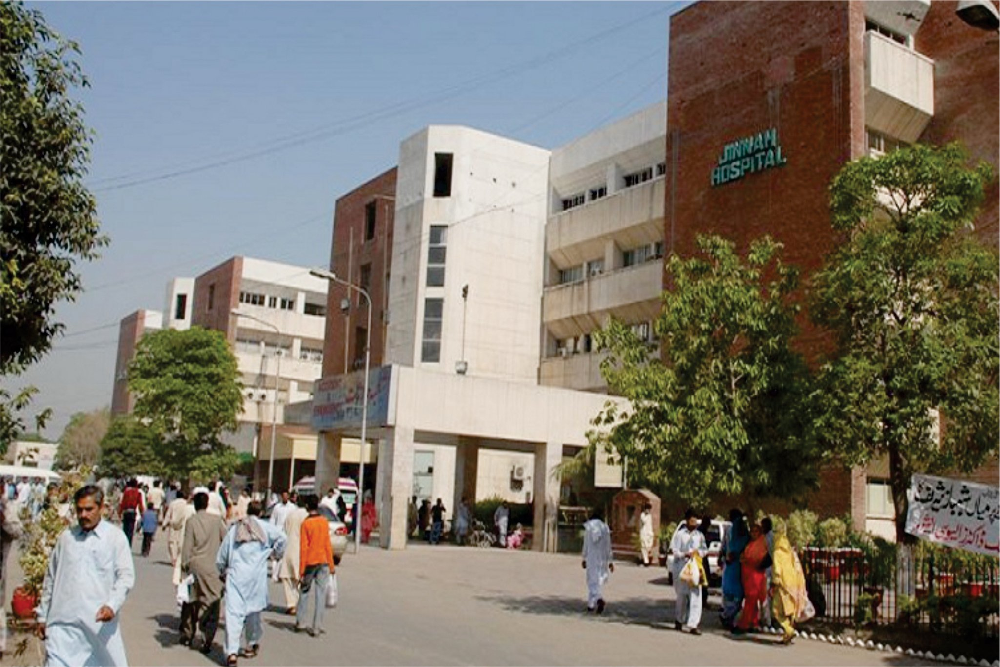

Jinnah Hospital (named after Quaid-e-Azam Muhammad Ali Jinnah, founder of Pakistan), established in 1996 in Lahore is a teaching hospital in the Pakistani province of Punjab. It is spread over 105 acres. It began operations in 1994, with very limited facilities , and was formally inaugurated on 2 February 1996, although with only basic specialties at first. In 2005, it added a new 100 bed Accident & Emergency Department and since then it is fully functional with 1500 beds. Staff of Jinnah hospital is working overzealously round the clock to serve patients coming from all over the Punjab with moto ”dignity in service”. It is providing services in various fields of medicine, surgery, gynecology and pediatrics etc.
  